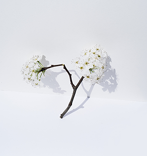
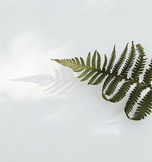

Site Features



The characteristic of the Simple & Sample siteis
to recommend perfumes that go well with each season.
Of course, you don't have to use perfumes that go well with certain seasons.
However, if you use perfumes that match the season, you will be able to enjoy the season even more.
If you use seasonal scents such as flower scents in spring and citrus scents in summer,
there will be fun and expectations to spray perfume.